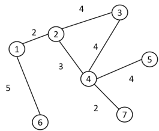
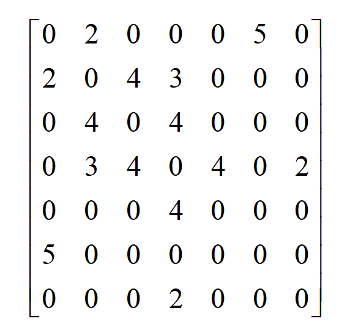

拉普拉斯矩阵 (Laplacian Matrix)
一、 拉普拉斯算符
1.定义
在物理学和数学中，拉普拉斯算符（Laplacian operator，通常记作 \(\Delta\) 或 \(\nabla^2\)）是一个极其核心的二阶微分算子。用来计算一个点的值与邻居平均值的差异，展现的是空间分布差异。
在三维直角坐标系中，作用于一个标量场 \(f(x,y,z)\)（比如空间中的温度分布、电势分布）的拉普拉斯算符定义为它在各个方向上二阶偏导数的总和：
拉普拉斯算符的本质是在计算：空间中某一点的值，与其无限小邻域内周围点的平均值之间的“差异”。
- 当 \(\nabla^2 f > 0\)（正值）：这意味着该点的值低于周围的平均值。在物理图像上，这里是一个“局部洼地”。自然界的趋势是去填平它。
- 当 \(\nabla^2 f < 0\)（负值）：这意味着该点的值高于周围的平均值。这里是一个“局部凸起”或“山峰”。自然界的趋势是让它向外扩散、削平它。
- 当 \(\nabla^2 f = 0\)：这意味着该点的值恰好等于周围的平均值。空间在这里完美平滑过渡，没有任何突变。
2.举例
热传导方程 (Heat Equation) 描述热量如何随时间演化的方程为：
- \(T\) 是温度。如果一个点比周围冷（洼地，\(\nabla^2 T > 0\)），热量就会流向这里，导致温度随时间上升。拉普拉斯算符在这里扮演了“推动系统走向热平衡”的驱动力。
二、拉普拉斯矩阵
- \(D\) (Degree Matrix, 度矩阵)：一个对角矩阵。对角线上的数字代表每个节点有几个邻居。
- \(A\) (Adjacency Matrix, 邻接矩阵)：记录了节点之间是否相连。如果节点 \(i\) 和节点 \(j\) 相连，则对应位置的值为 \(1\)，否则为 \(0\)。
| 图卷积研究对象 | 对应的邻接矩阵 |
|---|---|
 |
 |
- L (Laplacian Matrix, 拉普拉斯矩阵)：用 \(D\) 减去 \(A\) 得到的结果矩阵。
参考资料：(https://zhuanlan.zhihu.com/p/362416124)
三、二者的关联
1.本质：都是与邻居平均值的差异。
2.形式不同的原因：
图论的世界没有微积分。
原因一：图空间是离散的，只有连续空间才能求二阶偏导。
原因二：图结构没有绝对的坐标系和方向，无法对某个具体方向（如x,y,z）求偏导。
3.两者的数学联系
计算机无法处理微积分中“极限趋近于 0”的连续状态。因此，通过有限差分法（Finite Difference），利用泰勒展开将连续的二阶导数转化为离散的代数加减法。
（1） 泰勒展开（Taylor Series）
假设当前位置为 \(x\)，步长为 \(h\)。
-
向前展开：
\[f(x+h) = f(x) + hf'(x) + \frac{h^2}{2}f''(x) + \frac{h^3}{6}f'''(x) + O(h^4)\] -
向后展开：
\[f(x-h) = f(x) - hf'(x) + \frac{h^2}{2}f''(x) - \frac{h^3}{6}f'''(x) + O(h^4)\]
(\(O(h^4)\) 代表可忽略的高阶极小项)
（2） 消元求和提取二阶导数
消掉一阶和三阶等奇数阶导数：
移项：
这也是中心差分（Central Difference）二阶导数公式。
（3） 从连续微积分到离散图网络
在图结构中，节点之间没有物理距离的连续变化。如果两个节点相连，我们定义它们的基础步长为 \(h = 1\)。将 \(h = 1\) 代入上述公式，分母消失：
- \(f(x+1) + f(x-1)\)：提取所有相邻节点（左邻右舍）的值并相加。这完美等价于邻接矩阵 \(A\) 的聚合操作（\(Ax\)）。
- \(2f(x)\)：此处的
2正好是当前节点的邻居数量（度数）。这完美等价于度矩阵 \(D\) 提取自身权重的操作（\(Dx\)）。
因此，图上的二阶导数操作写成矩阵形式即为： $$ \text{图二阶微分} \approx Ax - Dx = -(D - A)x $$
结论： 图拉普拉斯矩阵 \(L = D - A\) 是严谨的连续二阶微积分算符在无绝对坐标系、无极限的离散图拓扑空间中的必然退化形式！